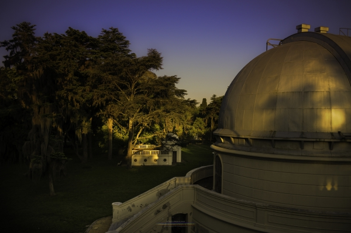

Espacio de representación, herramientas de estudio y defensa de la educación pública, gratuita y de excelencia en la FCAG de la UNLP.
Conocé las herramientas, espacios y proyectos que desarrollamos en el Observatorio.
Información para empezar: ingreso, nivelación y primeros pasos en la Facultad.
Conocé Geofísica, Astronomía, Meteorología, tecnicaturas y planes de estudio.
Conocé quiénes somos, qué defendemos y cómo trabajamos todos los días en la Facultad.
Accedé a Nube Morada, Clases Moradas, guía de trámites y beneficios universitarios.
Buffet La Viruta, congresos CIGMA y CONECTAR, viajes académicos y vinculación profesional.